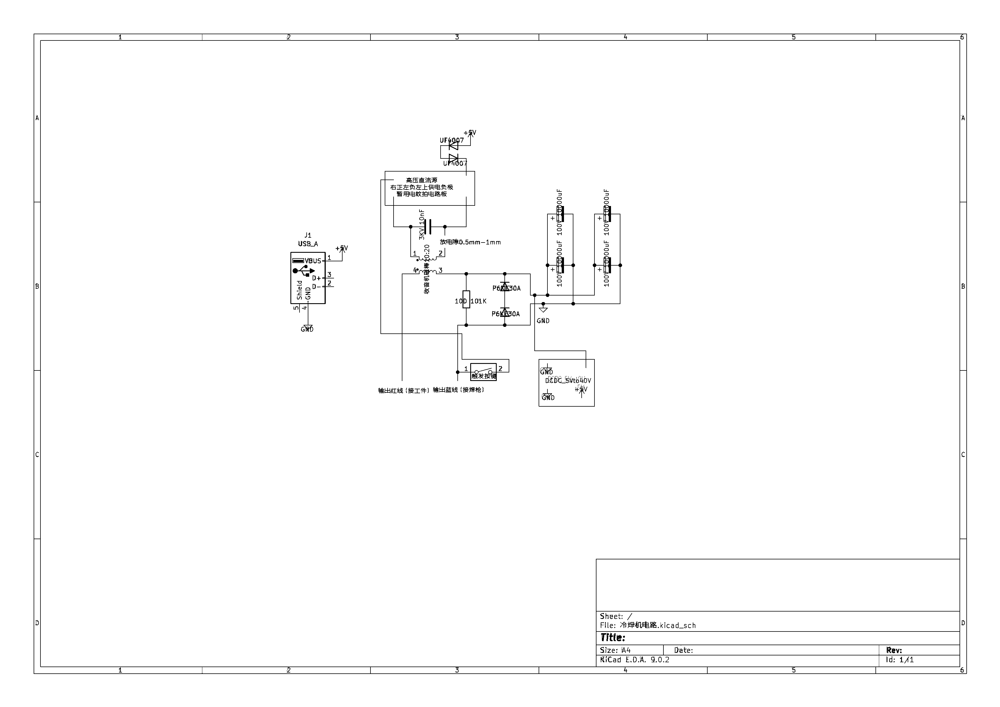
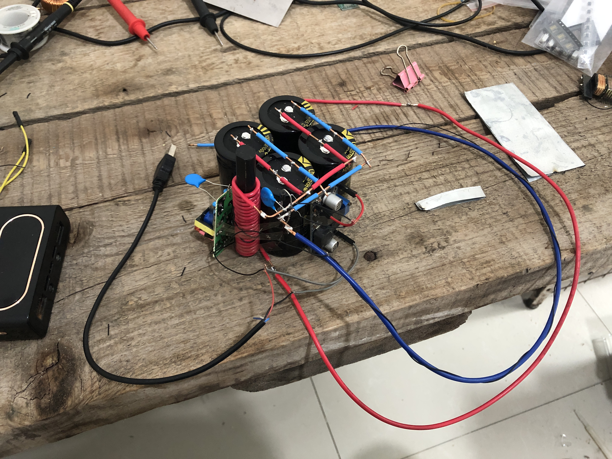

目的：之一是用于电子产品的结构。
2019初-冶炼_P
简介：天然材料；常用
柱
板材：尺寸:厚度：1mm-10mm；长20cm、宽20cm
加工追加：白乳胶
简介：类似玻璃，但不易碎
板：厚度1mm-10mm
加工追加：
简介：天然材料(石头)
加工追加：切割-金刚砂线锯(注意磨损)；注意粉尘有毒致癌
简介：金属里面最常用
铁皮：厚度0.1mm-1mm；长20cm、宽20cm；特殊尺寸-厚度0.01mm、0.02mm、0.05mm
铁丝:直径0.3mm-5mm
钢管
加工追加：
简介：导电性、导热性好
线、板
塑料
合成橡胶
合成纤维
简介：透明、硬度高、化学性质稳定。注意：危险
板：厚度1mm-5mm；特殊尺寸-厚度0.1mm、0.2mm、0.5mm
管：直径0.1mm-20mm
加工追加：切割-玻璃刀(切割油-煤油)、金刚砂线锯(磨损很快)；高温600摄氏度融化，用酒精喷灯。
铝：简介：导电性、导热性好。质量比铜轻、价格比铜便宜、熔点比铜低；板、线
碳：简介：燃烧、块、柱
尺寸：太厚难加工，太薄强度不够。
钳子
螺丝刀
钢锯、锯条-切割
热熔胶枪、环氧树脂胶、502-连接
电钻、钻头-钻孔
冶炼--铝933.52K，可用蜂窝煤炉+铁容器融化。
原理：高压建立通路，强流融化金属。变压器耦合高压实现既有高压脉冲又能通过大电流；低压电容需加压敏电阻和TVS保护；放电隙击穿时为低阻；
实测可焊接0.2mm铁板。
原理图

实物图

保护气（氩气、二氧化碳等）后面再说。
点焊机 3-5v
激光切割机
线切割机 电压 60-110 70-110 电流0.2-15 脉冲电流3-40
legacy：亚弧焊机（10-30v，空载50-100，5-500A）；高频焊机（对电网冲击大，暂放弃）
Fe、Cu、Al、Au、Ag、C
H2O、NaCl、Na2CO3(纯碱、苏打)、NaHCO3(小苏打)、CaCO3、CaO、Ca(OH)2、H2SO4、HCl、NaOH、H2O2、KMnO4、C2H5OH、CH3COOH、
O2、H2、N2、CO2、CO、CH4
FreeCAD
Solidworks
代打印